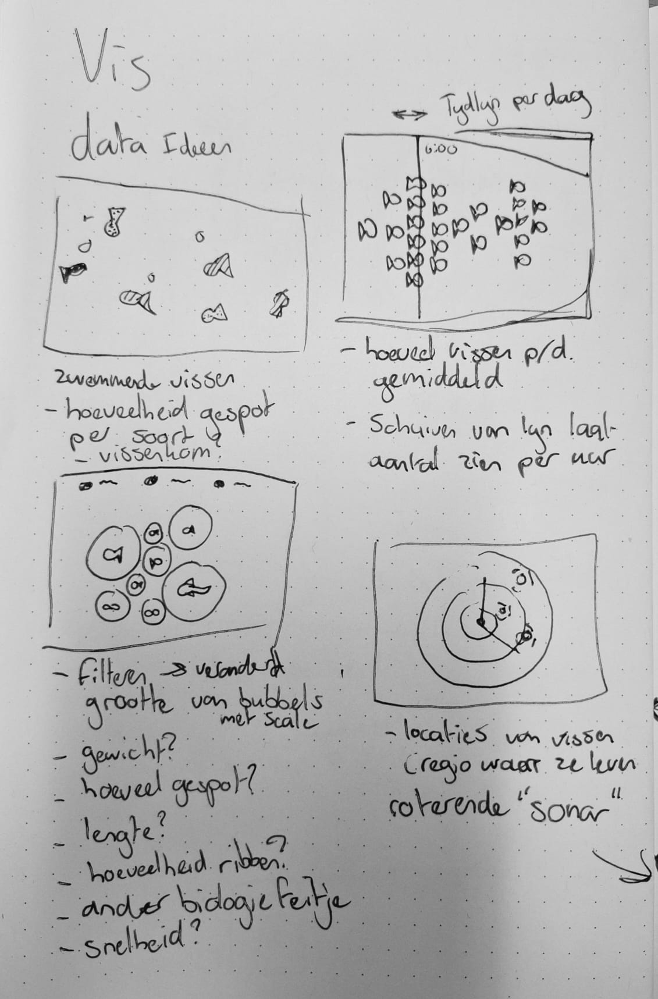
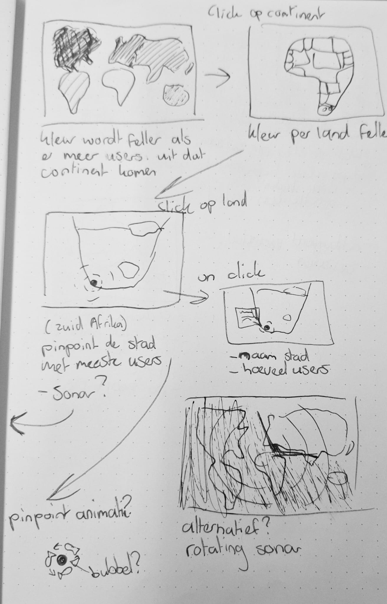
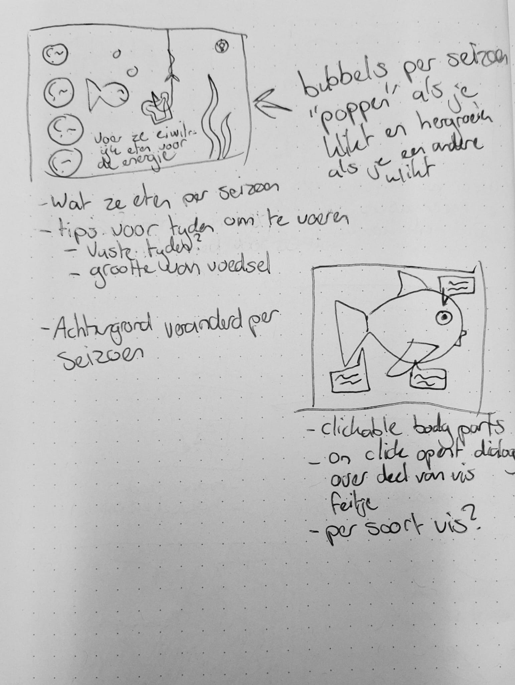

Projectstart
De briefing en context
We begonnen met de vorming van de projectgroepen en de eerste briefing
van opdrachtgever Cyd Stumpel. Daarin kregen we uitleg over de Visdeurbel
rondom de Weerdsluis in Utrecht: een interactief concept waarbij bezoekers
vissen kunnen spotten en de sluis helpen bedienen.
Ook bespraken we welke data beschikbaar is via Umami-analytics, zoals
bezoekerslocaties, browser- en OS-data, tijdstippen van activiteit en
vismeldingen of uploads. Daarnaast kwamen de technische randvoorwaarden
aan bod: de bestaande WordPress/PHP-omgeving, JSON-export van data en de
nadruk op toegankelijkheid en WCAG.
Team Vis
Wie wij zijn
Wij zijn Team Vis: een groep makers die samen werkt aan concept, techniek
en visuele uitwerking. Iedereen bracht eigen ideeën mee, waardoor we snel
konden schakelen tussen schetsen, prototypes en feedbackmomenten.
- Joost, 21 jaar, HBO-ICT
- Mitchell, 22 jaar, Communication & Multimedia Design
- Julius 22 jaar, Communication & Multimedia Design
- Nienke, 19 jaar, Communication & Multimedia Design
Onderzoek & conceptontwikkeling
Ontwerpverkenning



In de eerste week onderzochten we meerdere richtingen voor het visualiseren
van de data, waaronder een interactieve wereldkaart, tijdlijn,
aquariumconcept, dashboards, radar- en ringvisualisaties, en viskaarten met
detailpagina’s.
Waar we op letten
- Variatie in schetsen en iteraties.
- Aansluiting op de huisstijl van de Visdeurbel.
- Toegankelijkheid en visuele duidelijkheid.
- Interactie en engagement.
Feedback die we meenamen
- Laat meer iteraties zien.
- Geef duidelijke context in visualisaties.
- Maak mobile first sterker.
- Werk met een gezamenlijke style guide.
Technische experimenten
Datavisualisaties
We maken zo veel mogelijk interactieve prototypes met D3.js en Canvas API,
zoals een 3D-wereldbol met bezoekersdata, een ringkalender op uur- en
dagdata, radar- en netwerkvisualisaties, een interactieve tijdlijn van
visactiviteit en bubble- of pack-diagrammen.
- D3.js en SVG-animaties.
- TopoJSON en Canvas rendering.
- Async data loading met fetch.
- IntersectionObserver en responsive layouts.